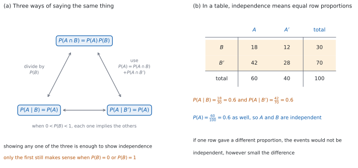

SL 4.11 — Formal conditional probability and independence（条件付き確率の定義と独立性の判定）
- \(P(A \mid B) = \dfrac{P(A \cap B)}{P(B)}\) を定義として使い、図をかかなくても計算できる。
- かけ算の形 \(P(A \cap B) = P(B)\,P(A \mid B)\) を使える。
- 独立の \(3\) つの言い方 \(P(A \cap B) = P(A)P(B)\)、\(P(A \mid B) = P(A)\)、\(P(A \mid B') = P(A)\) が同じことを表すと説明できる。
- testing for independence（独立性の判定）を、式で行える。
- \(P(A) = P(A \cap B) + P(A \cap B')\) を使って、\(P(A \mid B)\) と \(P(A \mid B')\) から \(P(A)\) を組み立てられる（樹形図の枝先を足すことを、式で書く）。
- 未知数を含む問題を、式を解いて処理できる。
The idea
SL 4.6a と SL 4.6b で図をかいて確かめた関係を、ここでは式として使い、未知数を含む問題に当てはめます。
1. 定義としての式
SL 4.6b では、条件付き確率を「標本空間が狭まること」として見ました。ここでは、同じ式を定義そのものとして使います。
\[ P(A \mid B) = \frac{P(A \cap B)}{P(B)}, \qquad P(B) \ne 0 \tag{1}\]
\(P(B) \ne 0\) が要ります。 起こらないと分かっていることを「起こった」とはできません。
分子は \(P(A \cap B)\) で、\(P(A)\) ではありません。 ここが最も多い誤りです。
2. かけ算の形
式 1 の両辺に \(P(B)\) をかけると
\[ P(A \cap B) = P(B)\,P(A \mid B) \tag{2}\]
になります。
\(A\) と \(B\) を入れかえた形もあります。
\[ P(A \cap B) = P(A)\,P(B \mid A) \]
\(2\) とおりに書けるので、検算に使えます。 同じ \(P(A \cap B)\) が両方から出るはずです。
3. 独立の \(3\) つの言い方
\(A\) と \(B\) が独立であることは、\(0 < P(B) < 1\) のとき、次の \(3\) つのどれで書いても同じです（図 1 (a)）。
\[ P(A \cap B) = P(A)P(B) \tag{3}\]
\[ P(A \mid B) = P(A) \quad (P(B) \ne 0), \qquad P(A \mid B') = P(A) \quad (P(B') \ne 0) \tag{4}\]
\(P(A \cap B) = P(A)P(B)\) は、公式集の 4.6 の欄に Independent events として載っています。
\(P(A \mid B) = P(A) = P(A \mid B')\) という書き方のほうは、シラバスの 4.11 に出てきます。公式集にはありません。
\(0 < P(B) < 1\) なら、\(1\) つ示せば十分です。 \(3\) つは同じことなので、いちばん使いやすいものを選びます。
\(P(A \cap B) = P(A)P(B)\) には割り算がありません。 \(P(B) = 0\) でも \(P(B) = 1\) でも意味を持ちます。条件付き確率のほうは、\(P(B) = 0\) だと \(P(A \mid B)\) が、\(P(B) = 1\) だと \(P(A \mid B')\) が定義されません。だから、独立の定義に選ぶのはかけ算の形です。
4. 独立性の判定
testing for independence（独立性の判定）は、次の手順で行います。
- 必要な確率を \(3\) つそろえる。\(P(A)\)、\(P(B)\)、\(P(A \cap B)\)。
- \(P(A)P(B)\) を計算する。
- \(P(A \cap B)\) と比べる。等しければ独立、等しくなければ独立ではない。
「だいたい等しい」は使いません。 ちがえば、どんなに小さな差でも独立ではありません。
\(P(A \cap B)\) が直接与えられないことがあります。 そのときは、式 1 や SL 4.6a の加法定理から作ります。
条件付き確率で比べても同じです。 \(P(A \mid B)\) と \(P(A)\) を比べる形でもかまいません（図 1 (b)）。
5. 式だけで解く
このページの問題は、図がなくても解けます。 与えられた確率を式に入れ、未知数について解きます。
使う式は \(4\) つです。
| 式 | 使う場面 |
|---|---|
| \(P(A \mid B) = \dfrac{P(A \cap B)}{P(B)}\) | 条件付き確率を出す |
| \(P(A \cap B) = P(B)\,P(A \mid B)\) | 共通部分を出す |
| \(P(A \cup B) = P(A) + P(B) - P(A \cap B)\) | 和事象から共通部分を出す |
| \(P(A) + P(A') = 1\) | 余事象に移る |
この \(4\) つのうち、公式集に印刷されているのは \(1\)、\(3\)、\(4\) 番目です。 \(2\) 番目は \(1\) 番目の両辺に \(P(B)\) をかけて、その場で作ります。
\(P(A \cap B')\) は \(P(A) - P(A \cap B)\) です。 \(A\) の中を \(B\) で分けたと考えます。
未知数が \(1\) つなら、式も \(1\) つで足ります。 \(2\) つなら、式も \(2\) つ必要です。
6. \(P(A)\) を組み立てる
\(A\) が起こる道すじは、\(B\) を通るものと \(B'\) を通るものの \(2\) つです。重ならないので、足せます。
\[ P(A) = P(A \cap B) + P(A \cap B') \]
式 2 を両方に使うと
\[ P(A) = P(B)\,P(A \mid B) + P(B')\,P(A \mid B') \tag{5}\]
これは樹形図の枝先を足すことと同じです（SL 4.6b）。式で書いただけです。
「\(B\) のもとでの \(A\) の確率」と「\(B'\) のもとでの \(A\) の確率」が与えられたら、この式で \(P(A)\) が出ます。
7. どの式を選ぶか
まず、何が与えられているかを書き出してください。 そこから使う式が決まります。
答えはすべて \(0\) 以上 \(1\) 以下です。 ここを外したら、式か代入がまちがっています。
このページの計算は、Paper 1 でも Paper 2 でも手でできます。かける・割る・引くだけです。
答えは分数のままで書けます。 \(\dfrac{21}{56}\) は \(\dfrac{3}{8}\) まで約分します。

Why it works
なぜ、\(3\) つの言い方が同じことなのでしょうか。 \(1\) つずつ移り合うことを見ます。
\(P(A \cap B) = P(A)P(B)\) から \(P(A \mid B) = P(A)\) へ。 \(P(B) \ne 0\) なら、式 1 に入れて
\[ P(A \mid B) = \frac{P(A)P(B)}{P(B)} = P(A) \]
です。逆に \(P(A \mid B) = P(A)\) から出発しても、両辺に \(P(B)\) をかければ \(P(A \cap B) = P(A)P(B)\) にもどります。
\(P(A \mid B) = P(A)\) から \(P(A \mid B') = P(A)\) へ。 \(A\) を \(B\) で分けます。
\[ \begin{aligned} P(A \cap B') &= P(A) - P(A \cap B) = P(A) - P(A)P(B) \\ &= P(A)\bigl(1 - P(B)\bigr) = P(A)P(B') \end{aligned} \]
割るときに \(P(B') \ne 0\) が要ります。ここから \(P(A \mid B') = P(A)\) です。\(B\) について独立なら、\(B'\) についても独立ということです。
残りの向きも同じです。 \(P(A \mid B') = P(A)\) から出発すると \(P(A \cap B') = P(A)P(B')\) で、
\[ P(A \cap B) = P(A) - P(A \cap B') = P(A)\bigl(1 - P(B')\bigr) = P(A)P(B) \]
にもどります。だから、\(0 < P(B) < 1\) のときは、\(3\) つのどれか \(1\) つから残りの \(2\) つが出ます。 \(P(B)\) が \(0\) か \(1\) だと条件付き確率の側が定義されないので、この言いかえはできません。
なぜ、\(P(A \cap B) = P(A)P(B)\) を代表の式に選ぶのでしょうか。 割り算がないからです。
\(P(B) = 0\) のときも \(P(A \cap B) = 0 = P(A) \times 0\) が成り立ちます。条件付き確率の形は \(P(B) \ne 0\) を要求します。 だから、判定にはかけ算の形を使うのが安全です。
なぜ、\(P(A) = P(B)P(A \mid B) + P(B')P(A \mid B')\) なのでしょうか。 \(A\) の中を \(B\) と \(B'\) で \(2\) つに分けたからです。
\(B\) と \(B'\) は重ならず、あわせて全体になります。だから \(A \cap B\) と \(A \cap B'\) も重ならず、あわせて \(A\) になります。重ならないものの確率は足せるので
\[ P(A) = P(A \cap B) + P(A \cap B') \]
なぜ、二元表では「行の割合が等しい」が独立なのでしょうか（図 1 (b)）。行の割合が \(P(A \mid B)\) と \(P(A \mid B')\) だからです。
この \(2\) つが等しいとき、その共通の値を \(p\) とおくと
\[ P(A) = P(B)p + P(B')p = p\bigl(P(B) + P(B')\bigr) = p \]
です。列の合計の割合も同じ \(p\) になります。 だから \(P(A \mid B) = P(A)\) で、独立です。
逆に、\(2\) つの行で割合がちがえば、独立ではありません。 \(P(A \mid B) \ne P(A \mid B')\) のとき、\(P(A)\) はその \(2\) つの間に入るので、どちらとも一致しないからです。
Worked examples
問題文は英語です。意味が理解できなかったら、問題文の下の「日本語訳」を開いてください。解説は日本語です。
例題も演習も、すべて電卓なしで解けます。 答えは分数のままで書いてかまいません。
例題 1 For two events \(A\) and \(B\), \(P(A) = 0.4\), \(P(B) = 0.5\) and \(P(A \cap B) = 0.2\).
(a) Find \(P(A \mid B)\).
(b) Find \(P(A \mid B')\).
(c) Show that \(A\) and \(B\) are independent.
(d) Justify that your answers to parts (a) and (b) had to be equal.
日本語訳
\(2\) つの事象 \(A\)、\(B\) について、\(P(A) = 0.4\)、\(P(B) = 0.5\)、\(P(A \cap B) = 0.2\) です。
(a) \(P(A \mid B)\) を求めなさい。
(b) \(P(A \mid B')\) を求めなさい。
(c) \(A\) と \(B\) が独立であることを示しなさい。
(d) (a) と (b) の答えが等しくなければならない理由を述べなさい。
(a) 式 1 を使います。
\[ P(A \mid B) = \frac{0.2}{0.5} = 0.4 \]
(b) まず \(P(A \cap B')\) と \(P(B')\) を出します（第 5 節）。
\[ P(A \cap B') = P(A) - P(A \cap B) = 0.4 - 0.2 = 0.2 \]
\[ P(B') = 1 - 0.5 = 0.5 \]
\[ P(A \mid B') = \frac{0.2}{0.5} = 0.4 \]
(c) 式 3 の両辺を計算します。
\[ P(A)P(B) = 0.4 \times 0.5 = 0.2 = P(A \cap B) \]
等しいので、\(A\) と \(B\) は独立です。
(d) Justify なので、英語で理由を書きます。
試験ではこう書く
Part (c) shows that \(A\) and \(B\) are independent, and for independent events \(P(A \mid B) = P(A)\) and \(P(A \mid B') = P(A)\). Both conditional probabilities therefore equal \(P(A) = 0.4\), so they had to be the same. Knowing whether \(B\) has happened does not change the probability of \(A\).
（(c) で \(A\) と \(B\) が独立と示された。独立なら \(P(A \mid B) = P(A)\) でも \(P(A \mid B') = P(A)\) でもある。だからどちらも \(P(A) = 0.4\) に等しくなる。\(B\) が起こったかどうかは、\(A\) について何も教えない、という意味です。）
検算（(a) について、範囲で）。 \(0 \le 0.4 \le 1\) ✓ 分子と分母を逆にしていたら、\(1\) をこえます。
検算（(b) について、\(4\) つの部分で）。 \(A \cap B = 0.2\)、\(A \cap B' = 0.4 - 0.2 = 0.2\)、\(A' \cap B = 0.5 - 0.2 = 0.3\) です。\(A' \cap B'\) は加法定理から \(1 - (0.4 + 0.5 - 0.2) = 0.3\) です。\(4\) つを足すと \(0.2 + 0.2 + 0.3 + 0.3 = 1\) ✓ \(A' \cap B'\) を「\(1\) から残りを引いて」出してはいけません。 それでは必ず \(1\) になり、確かめになりません。
検算（(c) について、与えられた \(3\) つが矛盾していないか）。 \(P(A \cap B) = 0.2\) は \(P(A) = 0.4\) と \(P(B) = 0.5\) のどちらよりも小さく、\(P(A \cup B) = 0.4 + 0.5 - 0.2 = 0.7 \le 1\) です ✓ ここが合わなければ、\(P(A \cap B)\) と \(P(A \cup B)\) を読みちがえています。
検算（(a) と (b) の重みつき平均で）。 \(P(B)P(A \mid B) + P(B')P(A \mid B') = 0.5(0.4) + 0.5(0.4) = 0.4 = P(A)\) ✓ 式 5 と一致します。
(a) \[P(A \mid B) = \frac{0.2}{0.5} = 0.4\]
(b) \[P(A \cap B') = 0.4 - 0.2 = 0.2, \qquad P(A \mid B') = \frac{0.2}{0.5} = 0.4\]
(c) \[P(A)P(B) = 0.4 \times 0.5 = 0.2 = P(A \cap B)\] so \(A\) and \(B\) are independent
(d) independence gives \(P(A \mid B) = P(A) = P(A \mid B')\), so both equal \(0.4\)
例題 2 For two events \(A\) and \(B\), \(P(A) = 0.6\), \(P(B) = 0.4\) and \(P(A \cup B) = 0.8\).
(a) Find \(P(A \cap B)\).
(b) Find \(P(A \mid B)\) and \(P(A \mid B')\).
(c) Determine whether \(A\) and \(B\) are independent.
(d) Explain how your answers to part (b) show the same conclusion as part (c).
日本語訳
\(2\) つの事象 \(A\)、\(B\) について、\(P(A) = 0.6\)、\(P(B) = 0.4\)、\(P(A \cup B) = 0.8\) です。
(a) \(P(A \cap B)\) を求めなさい。
(b) \(P(A \mid B)\) と \(P(A \mid B')\) を求めなさい。
(c) \(A\) と \(B\) が独立かどうかを判定しなさい。
(d) (b) の答えが (c) と同じ結論を示していることを説明しなさい。
(a) SL 4.6a の加法定理を移項します。
\[ P(A \cap B) = 0.6 + 0.4 - 0.8 = 0.2 \]
(b) 式 1 を使います。
\[ P(A \mid B) = \frac{0.2}{0.4} = 0.5 \]
\(P(A \cap B') = 0.6 - 0.2 = 0.4\)、\(P(B') = 0.6\) なので
\[ P(A \mid B') = \frac{0.4}{0.6} = \frac{2}{3} \]
\[ P(A)P(B) = 0.6 \times 0.4 = 0.24, \qquad P(A \cap B) = 0.2 \]
\(0.24 \ne 0.2\) なので、\(A\) と \(B\) は独立ではありません。
(d) Explain how なので、英語で書きます。
試験ではこう書く
If \(A\) and \(B\) were independent then \(P(A \mid B)\) and \(P(A \mid B')\) would both equal \(P(A) = 0.6\). Part (b) gives \(0.5\) and \(\dfrac{2}{3}\), neither of which is \(0.6\), and the two are not even equal to each other. This shows the events are not independent, agreeing with part (c).
（もし独立なら \(P(A \mid B)\) も \(P(A \mid B')\) も \(P(A) = 0.6\) に等しいはずである。(b) の答えは \(0.5\) と \(\dfrac{2}{3}\) で、どちらも \(0.6\) ではなく、互いにも等しくない。だから独立ではなく、(c) と同じ結論になる、という意味です。）
検算（(a) について、もどします）。 \(0.6 + 0.4 - 0.2 = 0.8\) ✓ 与えられた \(P(A \cup B)\) と一致します。
検算（(b) について、重みつき平均で）。 \(P(B)P(A \mid B) + P(B')P(A \mid B') = 0.4(0.5) + 0.6\left(\dfrac{2}{3}\right) = 0.2 + 0.4 = 0.6 = P(A)\) ✓ 式 5 と一致します。
検算（(c) について、\(4\) つの部分で）。 \(A \cap B = 0.2\)、\(A \cap B' = 0.4\)、\(A' \cap B = 0.2\)、\(A' \cap B' = 0.2\) で、合計は \(1\) ✓ どれも \(0\) 以上です。
検算（(d) について、独立ならどうなるか）。 独立なら \(P(A \cap B) = 0.24\) のはずですが、与えられた値から出るのは \(0.2\) です ✓ (b) の \(2\) つがちがう値になったことと、同じ原因です。
(a) \[P(A \cap B) = 0.6 + 0.4 - 0.8 = 0.2\]
(b) \[P(A \mid B) = \frac{0.2}{0.4} = 0.5, \qquad P(A \mid B') = \frac{0.4}{0.6} = \frac{2}{3}\]
(c) \[P(A)P(B) = 0.24 \ne 0.2 = P(A \cap B)\] so \(A\) and \(B\) are not independent
(d) independence would need \(P(A \mid B) = P(A \mid B') = P(A) = 0.6\), but the values are \(0.5\) and \(\dfrac{2}{3}\)
例題 3 For two events \(A\) and \(B\), \(P(B) = 0.3\), \(P(A \mid B) = 0.5\) and \(P(A \mid B') = 0.2\).
(a) Find \(P(A \cap B)\).
(b) Find \(P(A)\).
(c) Find \(P(B \mid A)\).
(d) Explain why \(P(B \mid A)\) is larger than \(P(B)\).
日本語訳
\(2\) つの事象 \(A\)、\(B\) について、\(P(B) = 0.3\)、\(P(A \mid B) = 0.5\)、\(P(A \mid B') = 0.2\) です。
(a) \(P(A \cap B)\) を求めなさい。
(b) \(P(A)\) を求めなさい。
(c) \(P(B \mid A)\) を求めなさい。
(d) \(P(B \mid A)\) が \(P(B)\) より大きい理由を説明しなさい。
(a) 式 2 を使います。
\[ P(A \cap B) = P(B)\,P(A \mid B) = 0.3 \times 0.5 = 0.15 \]
(b) 式 5 を使います。\(P(B') = 0.7\) です。
\[ P(A) = 0.3 \times 0.5 + 0.7 \times 0.2 = 0.15 + 0.14 = 0.29 \]
(c) 式 1 の \(A\) と \(B\) を入れかえた形です。分母は \(P(A)\) です。
\[ P(B \mid A) = \frac{P(A \cap B)}{P(A)} = \frac{0.15}{0.29} = \frac{15}{29} \]
(d) Explain why なので、英語で理由を書きます。
試験ではこう書く
The event \(A\) is more likely when \(B\) has happened than when it has not, since \(P(A \mid B) = 0.5\) is greater than \(P(A \mid B') = 0.2\). Learning that \(A\) has happened therefore makes \(B\) more likely than before. In symbols, \(P(B \mid A) = \dfrac{P(B)\,P(A \mid B)}{P(A)}\), and \(P(A \mid B) = 0.5\) is larger than \(P(A) = 0.29\), so \(P(B \mid A) > P(B)\).
（\(A\) は \(B\) が起こったときのほうが起こりやすい（\(0.5 > 0.2\)）。だから \(A\) が起こったと分かると、\(B\) の確率は前より大きくなる。よって \(P(B \mid A) > P(B)\) である、という意味です。）
検算（(b) について、はさまれているか）。 \(P(A) = 0.29\) は \(0.2\) と \(0.5\) の間にあります ✓ \(0 < P(B) < 1\) なので、重みつき平均は必ず \(2\) つの間に入ります。
検算（(b) について、重みで）。 \(P(B') = 0.7\) のほうが重いので、\(P(A)\) は \(0.2\) に近いはずです ✓ \(0.29\) は \(0.2\) 寄りです。
検算（(c) について、範囲で）。 \(\dfrac{15}{29} \approx 0.517\) で、\(0\) 以上 \(1\) 以下です ✓
検算（(c) について、余事象で）。 \(P(B' \mid A) = \dfrac{0.14}{0.29} = \dfrac{14}{29}\) です。\(\dfrac{15}{29} + \dfrac{14}{29} = 1\) ✓
(a) \[P(A \cap B) = 0.3 \times 0.5 = 0.15\]
(b) \[P(A) = 0.3 \times 0.5 + 0.7 \times 0.2 = 0.29\]
(c) \[P(B \mid A) = \frac{0.15}{0.29} = \frac{15}{29}\]
(d) \(A\) is more likely under \(B\) than under \(B'\), so knowing \(A\) happened makes \(B\) more likely than before
例題 4 Two events \(A\) and \(B\) are independent, with \(P(A) = 0.5\) and \(P(A \cap B) = 0.2\).
(a) Find \(P(B)\).
(b) Find \(P(A \cup B)\).
(c) Find \(P(A \mid B')\).
(d) Justify that \(A\) and \(B\) cannot also be mutually exclusive.
日本語訳
\(2\) つの事象 \(A\)、\(B\) は独立で、\(P(A) = 0.5\)、\(P(A \cap B) = 0.2\) です。
(a) \(P(B)\) を求めなさい。
(b) \(P(A \cup B)\) を求めなさい。
(c) \(P(A \mid B')\) を求めなさい。
(d) \(A\) と \(B\) が同時に互いに排反にはなりえないことを示しなさい。
(a) 独立なので 式 3 が使えます。
\[ 0.5 \times P(B) = 0.2, \qquad P(B) = 0.4 \]
(b) SL 4.6a の加法定理です。
\[ P(A \cup B) = 0.5 + 0.4 - 0.2 = 0.7 \]
(c) 独立なら \(P(A \mid B') = P(A)\) です（式 4）。
\[ P(A \mid B') = 0.5 \]
(d) Justify なので、英語で理由を書きます。
試験ではこう書く
Mutually exclusive events satisfy \(P(A \cap B) = 0\). Here \(P(A \cap B) = 0.2\), which is not zero, so the events are not mutually exclusive. More generally, independent events with \(P(A) \ne 0\) and \(P(B) \ne 0\) have \(P(A \cap B) = P(A)P(B) \ne 0\), so they cannot be mutually exclusive.
（互いに排反なら \(P(A \cap B) = 0\) である。ここでは \(0.2\) なので排反ではない。一般に、\(P(A)\) も \(P(B)\) も \(0\) でない独立な事象は \(P(A \cap B) = P(A)P(B) \ne 0\) となるので、排反にはなれない、という意味です。）
検算（(a) について、もどします）。 \(0.5 \times 0.4 = 0.2\) ✓ 与えられた \(P(A \cap B)\) と一致します。
検算（(c) について、直接計算でも）。 \(P(A \cap B') = 0.5 - 0.2 = 0.3\)、\(P(B') = 0.6\) なので \(\dfrac{0.3}{0.6} = 0.5\) ✓ 独立の性質を使った答えと一致します。
検算（(b) について、\(4\) つの部分で）。 \(A \cap B = 0.2\)、\(A \cap B' = 0.3\)、\(A' \cap B = 0.2\) です。\(A' \cap B'\) は独立性から \(P(A')P(B') = 0.5 \times 0.6 = 0.3\) として、(b) の答えとは別に出します。\(0.2 + 0.3 + 0.2 + 0.3 = 1\) ✓ 円の中は \(0.2 + 0.3 + 0.2 = 0.7\) です。
検算（(d) について、積で）。 \(0.5 \ne 0\) かつ \(0.4 \ne 0\) なので、積も \(0\) ではありません ✓
(a) \[0.5 \times P(B) = 0.2 \implies P(B) = 0.4\]
(b) \[P(A \cup B) = 0.5 + 0.4 - 0.2 = 0.7\]
(c) \[P(A \mid B') = P(A) = 0.5\]
(d) mutually exclusive needs \(P(A \cap B) = 0\), but here it is \(0.2\); independent events with non-zero probabilities always have \(P(A \cap B) \ne 0\)
Common errors
分母は縦棒の右の事象です（第 1 節）。分子はどちらも \(P(A \cap B)\) です。
独立と分かっているときだけ、かけ算にできます（式 3）。ふつうは \(P(A) - P(A \cap B)\) です。
\(P(A \cap B)\) と \(P(A)P(B)\) は、等しいか等しくないかです（第 4 節）。小さな差でも独立ではありません。
独立は \(P(A \cap B) = P(A)P(B)\)、排反は \(P(A \cap B) = 0\) です（SL 4.6b）。
\(P(A) = P(B)P(A \mid B) + P(B')P(A \mid B')\) です（式 5）。条件付き確率をそのまま足してはいけません。
Exercises
各問題に、折りたたみが \(3\) つ付いています。日本語訳、解答例（答案用紙に書くべきこと。英語です。英語の答案例が付くものもあります）、解説（なぜそうなるか。日本語です）。
まず自分で解いて、次に解答例と見くらべてください。解説は、合わなかったときだけ開けば十分です。
1 For two events \(A\) and \(B\), \(P(A) = 0.7\), \(P(B) = 0.4\) and \(P(A \cap B) = 0.28\). Show that \(A\) and \(B\) are independent, and find \(P(A \mid B)\).
日本語訳
\(2\) つの事象 \(A\)、\(B\) について、\(P(A) = 0.7\)、\(P(B) = 0.4\)、\(P(A \cap B) = 0.28\) です。\(A\) と \(B\) が独立であることを示し、\(P(A \mid B)\) を求めなさい。
\[P(A)P(B) = 0.7 \times 0.4 = 0.28 = P(A \cap B)\]
so \(A\) and \(B\) are independent
\[P(A \mid B) = \frac{0.28}{0.4} = 0.7\]
2 For two events \(A\) and \(B\), \(P(A) = 0.45\), \(P(B) = 0.6\) and \(P(A \cap B) = 0.2\). Find \(P(A \mid B)\) and \(P(B \mid A)\), and determine whether \(A\) and \(B\) are independent.
日本語訳
\(2\) つの事象 \(A\)、\(B\) について、\(P(A) = 0.45\)、\(P(B) = 0.6\)、\(P(A \cap B) = 0.2\) です。\(P(A \mid B)\) と \(P(B \mid A)\) を求め、\(A\) と \(B\) が独立かどうかを判定しなさい。
\[P(A \mid B) = \frac{0.2}{0.6} = \frac{1}{3}, \qquad P(B \mid A) = \frac{0.2}{0.45} = \frac{4}{9}\]
\[P(A)P(B) = 0.45 \times 0.6 = 0.27 \ne 0.2\]
so \(A\) and \(B\) are not independent
分母は縦棒の右の事象です（第 1 節）。判定は 式 3 です。
検算（条件付き確率で）。 \(P(A \mid B) = \dfrac{1}{3} \approx 0.333\) で、\(P(A) = 0.45\) とちがいます ✓ 独立でないことと合っています。
検算（もう一方でも）。 \(P(B \mid A) = \dfrac{4}{9} \approx 0.444\) で、\(P(B) = 0.6\) とちがいます ✓
検算（かけ算の形で、\(2\) とおりに）。 \(P(B)\,P(A \mid B) = 0.6 \times \dfrac{1}{3} = 0.2\)、\(P(A)\,P(B \mid A) = 0.45 \times \dfrac{4}{9} = 0.2\) ✓ どちらからも同じ \(P(A \cap B)\) にもどります。かける相手を取りちがえていると、この \(2\) つが合いません。
3 For two events \(A\) and \(B\), \(P(B) = 0.25\) and \(P(A \mid B) = 0.8\). Find \(P(A \cap B)\). Explain why \(P(A)\) cannot be found from the information given.
日本語訳
\(2\) つの事象 \(A\)、\(B\) について、\(P(B) = 0.25\)、\(P(A \mid B) = 0.8\) です。\(P(A \cap B)\) を求めなさい。また、与えられた情報からは \(P(A)\) が求められない理由を説明しなさい。
\[P(A \cap B) = P(B)\,P(A \mid B) = 0.25 \times 0.8 = 0.2\]
\(P(A) = P(A \cap B) + P(A \cap B')\), and nothing is given about \(P(A \mid B')\), so \(P(A \cap B')\) is unknown
式 2 をそのまま使います。\(P(A)\) については、式 5 の右側の項が分かりません。
検算（もどします）。 \(\dfrac{0.2}{0.25} = 0.8\) ✓ 与えられた \(P(A \mid B)\) と一致します。
検算（大小で）。 \(P(A \cap B) = 0.2\) は \(P(B) = 0.25\) より小さいはずです ✓ 共通部分は、どちらの事象よりも大きくなりません。
\(P(A)\) は \(1\) つに決まりません。 言えるのは \(0.2 \le P(A) \le 0.95\) ということだけです。
検算（範囲の両端で）。 \(P(A \mid B') = 0\) なら \(P(A) = 0.2\)、\(P(A \mid B') = 1\) なら \(P(A) = 0.2 + 0.75 = 0.95\) です ✓ \(P(A)\) は \(0.2\) から \(0.95\) までのどの値にもなりえます。
試験ではこう書く
Splitting \(A\) across \(B\) and \(B'\) gives \(P(A) = P(A \cap B) + P(A \cap B')\). The value \(P(A \cap B) = 0.2\) is known, but nothing is given about \(P(A \mid B')\), so \(P(A \cap B')\) could be anything from \(0\) to \(P(B') = 0.75\). Hence \(P(A)\) is not determined.
4 The table shows \(200\) people classified by two events \(X\) and \(Y\).
| \(X\) | \(X'\) | total | |
|---|---|---|---|
| \(Y\) | \(30\) | \(70\) | \(100\) |
| \(Y'\) | \(50\) | \(50\) | \(100\) |
| total | \(80\) | \(120\) | \(200\) |
One person is chosen at random. Determine whether \(X\) and \(Y\) are independent. Justify your answer.
日本語訳
表は \(200\) 人を \(2\) つの事象 \(X\)、\(Y\) で分類したものです。\(1\) 人を無作為に選びます。\(X\) と \(Y\) が独立かどうかを判定し、理由を書きなさい。
\[P(X \cap Y) = \frac{30}{200} = 0.15\]
\[P(X)P(Y) = \frac{80}{200} \times \frac{100}{200} = 0.4 \times 0.5 = 0.2\]
these are not equal, so \(X\) and \(Y\) are not independent
表から \(3\) つの確率を読み、式 3 で比べます（第 4 節）。
検算（行の割合で）。 \(P(X \mid Y) = \dfrac{30}{100} = 0.3\)、\(P(X \mid Y') = \dfrac{50}{100} = 0.5\) です ✓ ちがうので、独立ではありません。
検算（\(P(X)\) がはさまれているか）。 \(P(X) = \dfrac{80}{200} = 0.4\) で、\(0.3\) と \(0.5\) の間にあります ✓ 外に出たら、どこかで数を読みちがえています。
検算（表の合計）。 \(30 + 70 + 50 + 50 = 200\) ✓
試験ではこう書く
From the table \(P(X \cap Y) = \dfrac{30}{200} = 0.15\), while \(P(X) \times P(Y) = \dfrac{80}{200} \times \dfrac{100}{200} = 0.4 \times 0.5 = 0.2\). These are not equal, so \(X\) and \(Y\) are not independent. The same conclusion follows from the rows: \(P(X \mid Y) = \dfrac{30}{100} = 0.3\) but \(P(X \mid Y') = \dfrac{50}{100} = 0.5\).
5 For two events \(A\) and \(B\), \(P(A) = 0.5\), \(P(B) = 0.36\) and \(P(A \mid B) = 0.5\). Find \(P(A \cap B)\).
日本語訳
\(2\) つの事象 \(A\)、\(B\) について、\(P(A) = 0.5\)、\(P(B) = 0.36\)、\(P(A \mid B) = 0.5\) です。\(P(A \cap B)\) を求めなさい。
\[P(A \cap B) = P(B)\,P(A \mid B) = 0.36 \times 0.5 = 0.18\]
式 2 を使います。
検算（\(B'\) の側から）。 \(P(A \mid B) = 0.5 = P(A)\) なので \(A\) と \(B\) は独立で、\(P(A \mid B') = P(A) = 0.5\) になるはずです（式 4）。\(P(A \cap B') = 0.5 - 0.18 = 0.32\)、\(P(B') = 0.64\) なので \(\dfrac{0.32}{0.64} = 0.5\) ✓ \(P(A \cap B)\) の値をまちがえていれば、ここが \(0.5\) になりません。
検算（人数で）。 \(100\) 人で考えると \(B\) は \(36\) 人、そのうち \(A\) でもあるのは半分の \(18\) 人です。\(\dfrac{18}{100} = 0.18\) ✓
検算（もどします）。 \(\dfrac{0.18}{0.36} = 0.5\) ✓
検算（大小で）。 \(0.18 < 0.36\) かつ \(0.18 < 0.5\) ✓ 共通部分は、どちらの事象よりも大きくなりません。
6 Two events \(A\) and \(B\) are independent, with \(P(A) = 0.4\) and \(P(B) = 0.5\). Find \(P(A \cup B)\).
日本語訳
\(2\) つの事象 \(A\)、\(B\) は独立で、\(P(A) = 0.4\)、\(P(B) = 0.5\) です。\(P(A \cup B)\) を求めなさい。
\[P(A \cap B) = 0.4 \times 0.5 = 0.2\]
\[P(A \cup B) = 0.4 + 0.5 - 0.2 = 0.7\]
独立なので 式 3 で共通部分を出し、次に SL 4.6a の加法定理を使います。
検算（余事象で）。 \(P((A \cup B)') = P(A')P(B') = 0.6 \times 0.5 = 0.3\) です（\(A\) と \(B\) が独立なら、Why it works の議論をもう一度使って \(A'\) と \(B'\) も独立です）。\(1 - 0.3 = 0.7\) ✓
検算（\(4\) つの部分で）。 \(0.2 + 0.2 + 0.3 + 0.3 = 1\) ✓ 円の中は \(0.2 + 0.2 + 0.3 = 0.7\) です。
検算（範囲で）。 \(0.7\) は \(P(A) = 0.4\) と \(P(B) = 0.5\) のどちらよりも大きく、\(1\) 以下です ✓
7 For two events \(A\) and \(B\), \(P(A) = 0.5\) and \(P(B) = 0.2\). A student says that \(P(A \mid B)\) must be smaller than \(P(A)\), because \(B\) is less likely than \(A\). Comment on the student’s reasoning.
日本語訳
\(2\) つの事象 \(A\)、\(B\) について、\(P(A) = 0.5\)、\(P(B) = 0.2\) です。ある生徒が、「\(B\) のほうが \(A\) より起こりにくいので、\(P(A \mid B)\) は \(P(A)\) より小さいはずだ」と言いました。この生徒の考え方について述べなさい。
\(P(A \mid B) = \dfrac{P(A \cap B)}{0.2}\), and \(P(A \cap B)\) can be any value from \(0\) to \(0.2\)
so \(P(A \mid B)\) can be any value from \(0\) to \(1\); the size of \(P(B)\) alone decides nothing
Comment on なので、どこがまちがっているかを書きます（第 1 節）。\(P(A \mid B)\) を決めるのは \(P(A \cap B)\) と \(P(B)\) で、\(P(B)\) の大きさだけでは決まりません。
検算（両端で）。 \(P(A \cap B) = 0\) なら \(P(A \mid B) = 0\)、\(P(A \cap B) = 0.2\) なら \(P(A \mid B) = 1\) です ✓ どちらも \(0\) 以上 \(1\) 以下におさまります。
検算（\(P(A \cap B)\) の上限で）。 共通部分は \(P(A) = 0.5\) と \(P(B) = 0.2\) のどちらよりも大きくなれないので、上限は \(0.2\) です ✓ ここを \(0.5\) と思うと、\(P(A \mid B)\) が \(2.5\) になってしまいます。
検算（独立の場合で）。 独立なら \(P(A \mid B) = P(A) = 0.5\) です ✓ 「必ず小さい」に反する例が、独立というありふれた場合にすでにあります。
試験ではこう書く
The size of \(P(B)\) on its own says nothing about \(P(A \mid B)\). By the definition, \(P(A \mid B) = \dfrac{P(A \cap B)}{0.2}\), and \(P(A \cap B)\) can take any value from \(0\) to \(0.2\), so \(P(A \mid B)\) can take any value from \(0\) to \(1\). If every outcome in \(B\) is also in \(A\), then \(P(A \mid B) = 1\), which is larger than \(P(A) = 0.5\). The student’s reasoning is not valid.
8 For two events \(A\) and \(B\), \(P(B) = 0.6\), \(P(A \mid B) = 0.25\) and \(P(A \mid B') = 0.5\). Find \(P(A)\) and \(P(B \mid A)\).
日本語訳
\(2\) つの事象 \(A\)、\(B\) について、\(P(B) = 0.6\)、\(P(A \mid B) = 0.25\)、\(P(A \mid B') = 0.5\) です。\(P(A)\) と \(P(B \mid A)\) を求めなさい。
\[P(A) = 0.6 \times 0.25 + 0.4 \times 0.5 = 0.15 + 0.2 = 0.35\]
\[P(B \mid A) = \frac{0.15}{0.35} = \frac{3}{7}\]
式 5 で \(P(A)\) を組み立て、次に 式 1 を使います。分母は \(P(A)\) です。
検算（はさまれているか）。 \(P(A) = 0.35\) は \(0.25\) と \(0.5\) の間にあります ✓ \(0 < P(B) < 1\) なので、重みつき平均は必ず間に入ります。
検算（重みで）。 \(P(B) = 0.6\) のほうが重いので、\(P(A)\) は \(0.25\) に近いはずです ✓ \(0.35\) は \(0.25\) 寄りです。
検算（余事象で）。 \(P(B' \mid A) = \dfrac{0.2}{0.35} = \dfrac{4}{7}\) です。\(\dfrac{3}{7} + \dfrac{4}{7} = 1\) ✓
検算（\(P(B \mid A)\) と \(P(B)\) の大小）。 \(\dfrac{3}{7} \approx 0.429 < 0.6 = P(B)\) ✓ \(A\) は \(B'\) のもとで起こりやすいので、\(A\) が起こったと分かると \(B\) の確率は下がります。
9 Two events \(A\) and \(B\) are independent, with \(P(A) = 0.3\) and \(P(A \cup B) = 0.65\). Find \(P(B)\).
日本語訳
\(2\) つの事象 \(A\)、\(B\) は独立で、\(P(A) = 0.3\)、\(P(A \cup B) = 0.65\) です。\(P(B)\) を求めなさい。
\[P(A \cup B) = P(A) + P(B) - P(A)P(B)\]
\[0.65 = 0.3 + P(B) - 0.3\,P(B) = 0.3 + 0.7\,P(B)\]
\[P(B) = \frac{0.35}{0.7} = 0.5\]
独立なので、SL 4.6a の加法定理の \(P(A \cap B)\) を 式 3 で \(P(A)P(B)\) に置きかえられます。未知数が \(1\) つなので、式も \(1\) つで足ります（第 5 節）。
検算（もどします）。 \(P(A \cap B) = 0.3 \times 0.5 = 0.15\) なので \(P(A \cup B) = 0.3 + 0.5 - 0.15 = 0.65\) ✓ 与えられた値と一致します。\(P(A \cap B)\) を引き忘れて式を立てると、\(P(B) = 0.35\) が出ます。
検算（範囲で）。 \(P(A \cup B) = 0.65\) は \(P(A) = 0.3\)、\(P(B) = 0.5\) のどちらよりも大きく、\(1\) 以下です ✓
検算（\(4\) つの部分で）。 \(A \cap B = 0.15\)、\(A \cap B' = 0.15\)、\(A' \cap B = 0.35\)、\(A' \cap B' = P(A') - P(A' \cap B) = 0.7 - 0.35 = 0.35\) です。合計は \(1\) ✓
10 For two events \(A\) and \(B\), a student finds \(P(A \mid B) = 0.6\) and \(P(A) = 0.6\), and concludes that \(A\) and \(B\) must be mutually exclusive. Comment on the student’s conclusion.
日本語訳
\(2\) つの事象 \(A\)、\(B\) について、ある生徒が \(P(A \mid B) = 0.6\)、\(P(A) = 0.6\) を求め、\(A\) と \(B\) は互いに排反にちがいないと結論しました。この生徒の結論について述べなさい。
\(P(A \mid B) = P(A)\) shows that \(A\) and \(B\) are independent, not mutually exclusive
mutually exclusive would need \(P(A \cap B) = 0\), but \(P(A \cap B) = P(A)P(B) = 0.6P(B)\), which is not zero unless \(P(B) = 0\)
Comment on なので、どこがまちがっているかを書きます。\(P(A \mid B) = P(A)\) は独立の言い方です（式 4）。排反とはちがいます。
検算（排反ならどうなるか）。 排反なら \(P(A \cap B) = 0\) なので、\(P(B) \ne 0\) のとき \(P(A \mid B) = \dfrac{0}{P(B)} = 0\) です ✓ \(0.6\) ではありません。
検算（数で確かめます）。 \(P(B) = 0.5\) とすると \(P(A \cap B) = 0.6 \times 0.5 = 0.3\) です ✓ \(0\) ではないので、排反ではありません。
検算（\(P(B)\) が \(0\) でないこと）。 \(P(A \mid B)\) が与えられている以上、\(P(B) \ne 0\) です（\(P(B) = 0\) なら \(P(A \mid B)\) は定義されません）。だから \(P(A \cap B) = 0.6\,P(B) \ne 0\) で、排反ではありません ✓
試験ではこう書く
The student has confused independence with mutual exclusivity. Since \(P(A \mid B) = P(A)\), the events are independent, so \(P(A \cap B) = P(A)P(B) = 0.6\,P(B)\). Mutually exclusive events need \(P(A \cap B) = 0\). Since \(P(A \mid B)\) is given, \(P(B) \ne 0\), so \(P(A \cap B) = 0.6\,P(B) \ne 0\) and the events cannot be mutually exclusive.